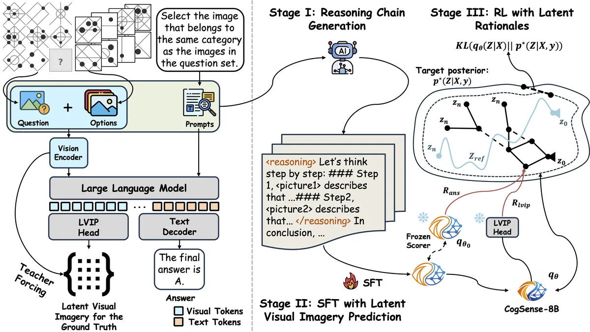

Toward Cognitive Supersensing in Multimodal Large Language Models
Visual imagery for multimodal cognition
Cognitive Supersensing introduces a Latent Visual Imagery Prediction head that learns internal visual reasoning chains alongside answer prediction. Reinforcement learning then grounds text reasoning in these visual latents, with CogSense-Bench evaluating five cognitive dimensions.
Day
Time
10:00 a.m.–1:00 p.m. EST
Session
Atlanta Poster Session 1
Location
Atlanta · Hall C1
Paper
Research preview

Cite this paper
@inproceedings{li2026cognitive,
title={Toward Cognitive Supersensing in Multimodal Large Language Models},
author={Li, Boyi and Shen, Yifan and Liu, Yuanzhe and Xu, Yifan and Liu, Jiateng and Li, Xinzhuo and Li, Zhengyuan and Zhu, Jingyuan and Zhong, Yunhan and Lan, Fangzhou and Cao, Jianguo and Rehg, James Matthew and Ji, Heng and Lourentzou, Ismini and Cao, Xu},
booktitle={Advances in Neural Information Processing Systems},
year={2026},
url={https://arxiv.org/pdf/2602.01541}
}